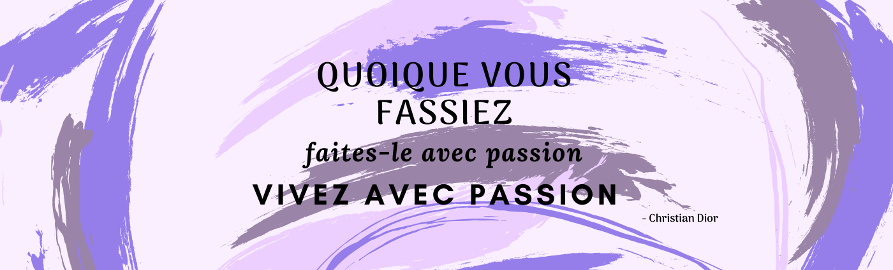
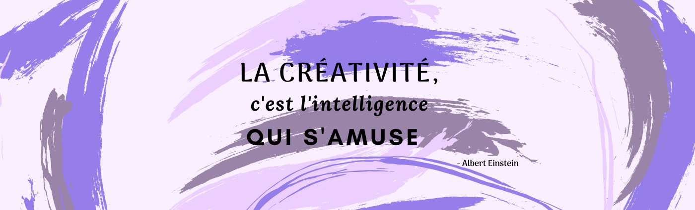

Présentation
×

Bienvenue sur mon site !
Je m'appelle Nathalie, j'ai 24 ans et je suis actuellement le parcours de développeur web
chez Openclassrooms.
Je suis à la recherche d'une alternance de 12 mois dans le cadre de ma
formation.
Comme la plupart des jeunes de mon âge j'ai eu beaucoup de mal à trouver ma voie et le métier de mes
"rêves".
Après mon baccalauréat économique et social, j'ai souhaité approfondir mon intérêt pour les langues,
la culture et l'histoire.
Je me suis donc inscrite à la fac pour faire une licence en Langues Étrangère Appliquées
(L.E.A).
Après l'obtention de ma licence, j'ai voulu me réorienter vers mon passe-temps de toujours qui est
l'informatique.
Je me suis donc renseignée sur les métiers possible dans ce domaine et c'est ainsi que j'ai
découvert le métier de développeur.
J'ai de suite su que c'était le métier que je voulais faire !
J'ai donc passé plusieurs entretiens afin d'intégrer une formation de développeur, mais soit les
dates étaient closent soit j'étais sur liste d'attente.
J'ai persévéré jusqu'à être admise chez Openclassrooms.
Depuis, je poursuis ma formation.
Mes réalisations ×

Mon site
webest réalisé avec ,
et .
Ce site s'améliore au fur et à mesure que je monte en compétences. Cette version est donc provisoire
!. Je l'ai réalisé en dehors de mon parcours de formation.
Réservia est un site factice de réservation de vacances que j'ai
codé from scratch
uniquement en et .
Ce projet a été effectué dans le cadre de ma formation développeur web avec Openclassrooms.
Oh My Food est un site de commande de nourriture que j'ai codé
from scratch uniquement
en et et . Les animations sont le centre de ce projet, le but était de
le dynamiser
et le rendre attractif. Ce projet a été réaliser dans le cadre de ma formation développeur web avec
Openclassrooms.
La Chouette Agence est le site d'une agence de design
qui avait besoin d'une mise à jour au niveau SEO, de l'accessibilité de son site. Il fallait clean
tout le code afin d'avoir un bon score lighthouse, enlever toutes les
techniques de black hat, vérifier les contrastes, et d'autres fonctionnalités qui affectaient les
performances du site.
Orinoco est le projet que je réalise actuellement. C'est un site
de e-commerce spécialisé
dans la vente d'objets unique, soit des caméras, des oursons en peluche ou des meubles. Ce projet
est
en cours de réalisation dans le cadre de ma formation développeur web avec Openclassrooms.
Mes compétences
×
Voir mon CV
le projet Réservia, j'ai acquis les compétences suivantes :
- Mettre en place mon environnement front-end,
- Implémenter une interface responsive,
- Intégrer du contenu conformément à une maquette,
- Utiliser un système de gestion de versions pour suivre un projet et l'héberger.
Avec le projet Oh My Food, j'ai validé les compétences suivantes :
- Mettre en œuvre des effets CSS graphiques avancés,
- Mettre en place une structure de navigation pour un site web,
- Assurer la cohérence graphique d'un site web,
Avec le projet Oh My Food, j'ai validé les compétences suivantes :
- Mettre en œuvre des effets CSS graphiques avancés,
- Mettre en place une structure de navigation pour un site web,
- Assurer la cohérence graphique d'un site web.
Avec le projet Oh My Food, j'ai validé les compétences suivantes :
- Optimiser la taille et la vitesse d’un site web,
- Écrire un code HTML et CSS maintenable,
- Réaliser une recherche des bonnes pratiques en développement web,
- Optimiser le référencement d'un site web
- Assurer l'accessibilité d'un site web.